| |
|
SEÇME MALZEME VE ZAYIF ZEMİN KAZISI
|
Genel Bilgiler
Seçme malzeme eğiminin kontrolü Seçme malzeme katmanları için şevlerin tanımlanması Derinlik kontrolü Bir dolgu kaplamasının simülasyonu Güçlendirme tablosuna göre seçme malzeme. Genişletme ve iyileştirme projeleri Genel Bilgiler 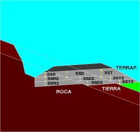Enkesit hesaplamasının temel işlevi, üstyapı katman paketinin oturacağı bir yarma kazısı ve bir dolgu platformu oluşturmaktır. Bazı durumlarda, üstyapı ile oturma yüzeyi arasındaki teması iyileştiren bir seviyenin üstyapı altında olması istenir. Genellikle yarmada yapılması gereken işlem olduğu için zayıf zemin kazısı, dolguda tesviye yüzeyinin son katmanı olduğu için iyileştirilmiş taban veya bu malzemenin yapıldığı malzeme olduğu için seçme malzeme olarak adlandırılır. Bu menüde, bu seviyeler farklı kalınlıklarda, kayada (SSR veya SSR2), yarma toprağında veya dolguda olmasına göre ve her KM için farklı değerlerle tanımlanabilir; her veri çifti arasında doğrusal olarak enterpolasyon yapılır veya hesaplama aralığının tamamına ulaşılmazsa ekstrapolasyon yapılır. Kullanıcı KM'leri seçeneği, KM'leri kullanıcı değerleriyle girmeye olanak tanır. Seçenek etkinleştirilebilir/devre dışı bırakılabilir ve etkinleştirme durumu .vol dosyasına kaydedilir. BOYKESİT'ten [SEÇME MALZEME] tuşuna basıldığında, aşağıdaki gibi bir pencere açılır: 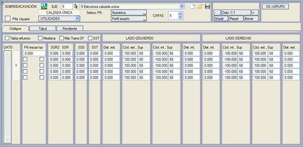
Bilgi içeren her veri için, terasmandan aşağı doğru ölçülen seçme malzeme kalınlıkları aşağıdaki değerlerle tanımlanabilir:
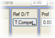[Şev] → Ref Y/D'den, yarma veya dolgu kalınlıklarını uygulamak için referans arazi seçilebilir. İki olasılık vardır:
PR (Paralel Refüj) kutucuğu işaretlenirse, yüzey kırmızı kota (yüzey 67) paralel olarak 1 kodundan içeriye doğru çizilecektir. ZM seçeneği, yüksekliğin duvar temel pabucuna göre olmasını sağlar. Sağdaki kutucuk işaretlenirse, bu kotun yalnızca eksende uygulanacağını ve geri kalanının terasmana paralel olacağını belirtmiş oluruz. Seçme malzeme menüsünde gösterilen katman sayısı (1-20) seçilebilir. Görünen katman sayısı (1-20) .vol dosyasına kaydedilir.
Varsayılan olarak, seçme malzeme katmanları dolgu durumunda şevde, yarma durumunda ise hendeğin en alt noktasında durur. Seçme malzemenin yanal uzantısı, katmanın ulaşması gereken dış ve iç kodları ve bunlara olan bir mesafeyi (Dış Kod, Dış Mes., İç Kod, İç Mes.) girerek de sınırlandırılabilir. 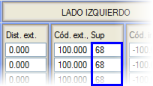Dış ve iç kenarlar için referans yüzey olarak, onu kullanan katmandan önce oluşturulmuş olan 68 yüzeyinin yanı sıra herhangi bir yüzeyin kullanılmasına izin verilir. 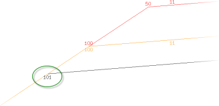 Dış kodun 100 (platformun terasmanla kesişimi) olması durumunda, seçme malzeme bu noktanın altında durmaz, dolgu şevi veya yarma durumunda hendek şevini kesene kadar uzatılır. İkinci durumda, eğer seçme malzeme hendekten daha derinse, hendek tabanının düşeyinde durur. Her durumda, yarmadaki aşırı kazının dış kapanışı, uygun bir dış kod (örneğin, 1103) girilerek hendeğin arkasında da yapılabilir. Dış kodlar için, hendek ve yarmanın başlangıcı bu tür bir yüzeyle oluşturulduğunda, uygun olmayan yarma yüzeyinin kodları da kullanılabilir. İç başlangıç noktası için 100'den büyük referans kodlarına izin verilir; bu, hendek veya yarmanın altından dışarıya doğru başlayan katmanlar içindir. Tesviye yüzeyinin aplikasyonu için son geçerli nokta (dolgu şeviyle kesişim, hendek tabanının düşeyindeki nokta veya dış kodun düşeyindeki nokta) 101.0 koduyla kodlanır. 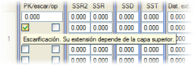Yarmadaki bazı seçme malzeme katmanlarında, kazıma (escarificación) kutucuğu etkinleştirilerek, uzantı önceki katmanınkiyle aynı hale getirilebilir. 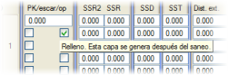op kutucuğu, belirli bir katmandan başlayarak, önce iyileştirme ve drenaj katmanı kazı hattının (eğer varsa) uygulanmasına ve daha sonra bu alt seçme malzeme katmanlarının o hatlara dayanarak sonlanmasına olanak tanır. Refüj seçeneği, refüjün terasmanı kestiği bölgede, seçme malzemenin refüjün tepe noktasına paralel yapılmasını sağlar. Malz. Geç. San.Y. seçeneği etkinleştirildiğinde, Seçme Malzeme malzemesi, Sanat Yapılarının kaplama geçiş malzemelerine göre öncelikli olur. SST seçeneği etkinleştirildiğinde, dolgudaki seçme malzeme değeri yarmadaki seçme malzemeden daha düşük olduğunda ve hala arazinin üzerinde olduğumuzda, bu durumda arazinin altında olsak bile artık yarmada seçme malzeme katmanı tanımlanmaz. Örnek
Platformların altında üç kat seçme malzeme bulunan, her biri 30 cm olan ve iç banket kenarından başlayarak refüje doğru 1/1 şevle biten bir otoyol. Refüj bölgesinde bu 90 cm'lik kısım farklı bir malzeme ile doldurulur.
Tanım:
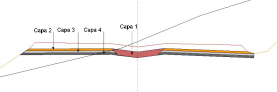
Seçme malzeme tanım tablosu .vol dosyasına kaydedilir, ancak sırasıyla [Kaydet] ve [Yükle] düğmeleri aracılığıyla .ssl uzantılı dosyalara da kaydedilebilir ve geri yüklenebilir. Diğer yandan, [SM->GRUP] seçeneği, mevcut eksenin seçme malzeme tanımını, ilgili .vol dosyalarını değiştirerek, aynı grubundaki tüm eksenler için kopyalamaya olanak tanır. Özel durum: Seçme malzemeyi hendek veya yarma kodlarından birine (1101,1102,...,1301,1302,..) kadar götürdüğümüzde ve bu kod uygun olmayan veya bitkisel zemin üzerine düştüğünde, uygun olmayan zemin vektörü bu kod geçene kadar uygulanmayacaktır.
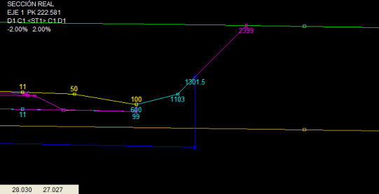
Seçme malzeme için dış kod, hendek veya yarma araziye daha önce ulaştığı için kesildiğinde, o zaman kesitin son noktasının kodu olarak alınır. Seçme malzeme eğiminin kontrolü 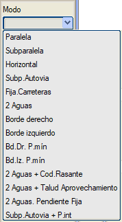Program, seçme malzemenin farklı katmanlarının alacağı eğimin davranışını belirlemek için üç farklı yol sunar. Bu seçenekler, her bir KM için aşağıda göreceğimiz parametrelerin farklı değerlerini tanımlayabilmek için [Eğim] sekmesinde tanımlanabilir:
Yukarıdakilere ek olarak, program bir minimum eğim belirlemeye olanak tanır. Bu şekilde, Min. Eğ. (%) değerine sıfırdan farklı bir değer girilirse, dever bu değere eşit veya daha düşükse, minimum eğime sahip çift eğimli bir seçme malzeme (otomatik bir çatı mahyası oluşturarak) inşa edilir. Dever bu değerden büyükse, seçme malzeme terasmana paralel olarak uygulanır. Otoyollar durumunda, deverler minimum eğimden daha düşükse, seçme malzeme için her iki tarafta da otomatik bir çatı mahyası oluşturulur. Refüj altında, eğimler ikisinin en alçak noktasını arar. 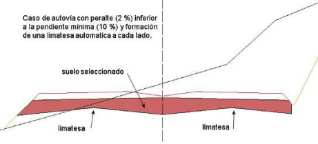
Tek platformlu karayolları durumunda, deverler minimum eğimden daha düşükse, terasman alt paralel olsa bile seçme malzeme için otomatik bir çatı mahyası oluşturulur. 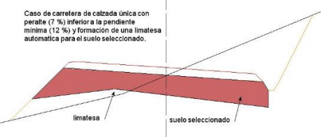
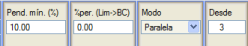 Minimum eğimde, seçme malzemenin hangi çizgiden uygulanmaya başlanacağı da başlangıç olarak belirlenebilir. Örneğin, 4 katmandan oluşan bir seçme malzeme varsa ve üstteki iki katmanın tabanının terasmana paralel olması ve alttaki iki katmanın tabanının drenajı sağlamak için %10'luk bir minimum eğime sahip olması isteniyorsa, o zaman 3. katmandan itibaren uygulanacak %10'luk bir minimum eğimle paralel bir davranış belirtilecektir. Program, %dever (Mahya->PK)'de belirtilen değer aracılığıyla çatı mahyasını platform kenarı altına getirmek için deveri belirtmeye olanak tanır. Bu seçenek, minimum eğim de 0'dan farklı olduğunda çalışır, seçme malzemenin çatı mahyasının konumunu optimize eder ve dever minimum eğime eşit olduğunda, çatı mahyası platform kenarı altına yerleştirilir. Örneğin, sağa doğru bir kurpta çatı eğiminden %2 devere geçen bir karayolu varsa ve %4 minimum eğimli ve %dever (Mahya->PK) = 2 olan bir seçme malzeme belirtilmişse, o zaman seçme malzemenin çatı mahyası çatı eğimi bölgesinde eksenin altından, %2 dever bölgesinde platformun sol kenarı altına geçecektir. Seçme malzeme katmanları için şevlerin tanımlanması Seçme malzeme şevleri, [Şev] sekmesine tıklandığında görünen diyalog kutusundan, DIŞ ŞEV ve İÇ ŞEV'e karşılık gelen kutucuklardan tanımlanabilir. Dış şev uygulaması için aşağıda göreceğimiz 3 olasılık vardır ve iç şevler için bunları 2 tanesiyle (yukarı veya aşağı) tanımlayabiliriz:
Seçme malzemenin tanımlandığı çizginin dolgu şev dibinin altında olduğu alçak dolgulardaki seçme malzeme durumunda, dış şeve -1000 değeri verilirse, her iki çizgi de, dolgu şevi arazinin altından ve seçme malzeme eğimini takip ederek, arazinin altındaki bir noktada kesişene kadar uzatılır. Ayrıca, uygun olmayan bir yarma vektörü tanımlanmışsa, bu vektör kazı çizgisini araziyi tekrar kesene kadar uzatmak için kullanılır. Bu, aşağıdaki örnekte oldukça iyi görülmektedir:
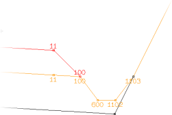Dolgu şev dibini arazinin altına, seçme malzemenin uzantısını kesene kadar uzatma seçeneği kullanıldığında, program aşağıdaki hususları dikkate alır:
Dolguda, iç şevler dolgu şevine paralel yapılabilir. Şev pozitif bir değerle tanımlandığında, terasmandaki şevin başlangıç noktası, kodlu noktadan tanımlanan yatay mesafededir, bu da şevin seçme malzeme tabanında bittiği noktanın devere bağlı olarak yanal olarak hareket edebileceği anlamına gelir:
Eğer iç şev negatif bir değerle tanımlanırsa, tanımlanan yatay mesafede ve kodlu noktayla aynı kotta bir noktadan geçirilir. Bu şekilde, terasmandaki şevin başlangıç noktası deverle yanal olarak değişebilir, ancak şevin seçme malzeme tabanında bittiği nokta sabit kalır. 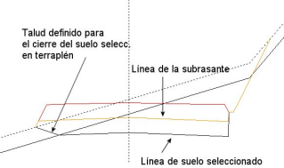Ayrıca dolguda, yukarıdan (veya öncekinden) bir kapanış şevi tanımlanırsa ve bir dolgu enkesitinde seçme malzeme çizgisi arazinin altındaysa, resimde gösterildiği gibi seçme malzemeyi kesmek için dolgu şev dibinden tanımlanan şev kullanılır. İçeriden seçme malzemeyi sınırlayan iki noktayı (iç kod + mesafe), terasman refüjü kestiğinde bile düz bir segmentle birleştirmek mümkündür. Bunun için, iç şev olarak -1000 değerini belirtmek yeterlidir. Ayrıca, iç koddan itibaren seçme malzemenin belirli bir minimum eğim almasını zorlamak da mümkündür, öyle ki eksende en düşük kota sahip olan diğer tarafa hükmeder. Bunu yapmak için şunlar belirtilecektir:
İÇ ŞEV = -1002, %2 eğim için
İÇ ŞEV = -1004, %4 eğim için ve bu şekilde devam eder. Derinlik Kontrolü 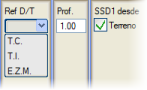[Şev] sekmesine tıklandıktan sonra görünen seçenekler arasında, seçme malzemenin derinliğinin kontrolüyle ilgili olan ve aşağıda açıklanan bazıları bulunmaktadır. Eğer yalnızca dolgu için bir seçme malzeme tanımlanırsa, referans arazi üzerinde durmak yerine, referans arazinin (sağlam veya uygun olmayan) altında belirtilen derinliği iyileştirene kadar devam edecektir. Derinlik değeri, iyileştirme derinliğine, iyileştirme basamaklarının yüksekliğine veya her ikisinin toplamına eşit olabilir. 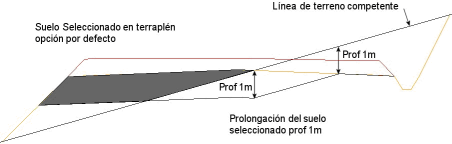
Yarma bölgelerinde, birinci seçme malzeme katmanının taban derinliği araziden tanımlanabilir. Bu, SSD1 başlangıç sütununda bulunan Arazi kutucuğu etkinleştirilerek sağlanır. Program, referans yüzey olarak duvar temel pabucu için kazıdan (D.T.P.) oluşan ve sağlam zeminle tamamlanan yüzeyi kullanma imkanına sahiptir. Bir Dolgu Kaplamasının Simülasyonu SEÇME MALZEME KATMANI İLE:
Grafikte aşağıdaki seçme malzeme katmanları görünmektedir:
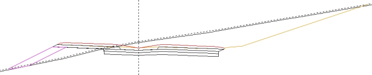
Güçlendirme tablosuna göre seçme malzeme. Genişletme ve iyileştirme projeleri 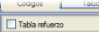 Eğer Güçlendirme tablosu kutucuğu etkinleştirilmişse, o zaman program, bu tablodan seçme malzeme için veri okumak yerine, BOYKESİT → [GÜÇLENDİRME TABLOLARI] menüsünde tanımlananları okuyacaktır. [GÜÇLENDİRME TABLOLARI]'ndan ve Düzenleme veya Genişletme modlarından bir seçme malzeme tanımlandığında, bu malzemeye paralel katmanlar, seçme malzeme menüsünden 3, 4 ve 5 numaralı katmanlarda tanımlanabilir. Bu paralel katmanların kalınlıkları üç sütundan herhangi birinde verilebilir (SSR, SSD, SST). Güçlendirme Tabloları menüsüne gidebilir veya Seçme Malzeme menüsünün kendisinden,  tuşuyla menüyü açarak Tanınan Doğal Zemin verilerini tanımlayabiliriz. tuşuyla menüyü açarak Tanınan Doğal Zemin verilerini tanımlayabiliriz.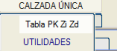 Genişletme ve iyileştirme projelerinde, seçme malzeme katmanını düzenleme katmanının altında, sol ve sağda farklı ve KM ile değişen kalınlıklarla tanımlamak mümkündür. Bunun için, [YARDIMCI PROGRAMLAR] açılır menüsünde, her satırında üç veri içeren .pkz uzantılı bir dosyayı okuyan [Tablo KM Zs Zd] yardımcı programı bulunur: KM, Zs ve Zd; burada Zs sol taraftaki seçme malzeme katmanının kalınlığı ve Zd sağ taraftaki kalınlıktır. Bu dosya yüklendiğinde, sol katmanın verileri üçüncü seçme malzeme katmanına ve sağdakiler dördüncüye eklenir; birinci ve ikinci katmanlar, güçlendirme tablosundan tanımlanan olası düzenleme katmanları için ayrılır. Kalınlıklarını tanımlamak için Z değerlerini mutlak kotlarla vermek istersek, tabloyu yüklemeden önce, tabloyu kullanan üçüncü seçme malzeme katmanının [Şev] sekmesindeki ZD ve ZT kutucuklarını işaretleyebiliriz. Tabloyu yüklerken, bu kutucuklardan herhangi biri işaretlenmişse, tüm veriler için otomatik olarak genişletilir. |